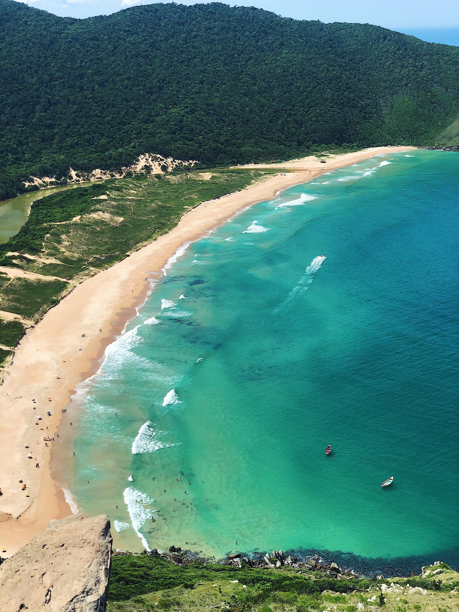
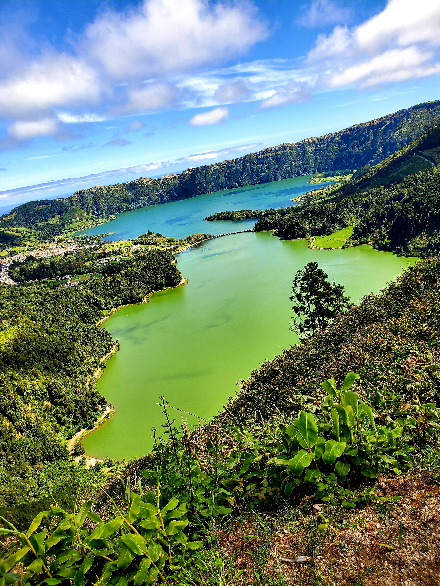
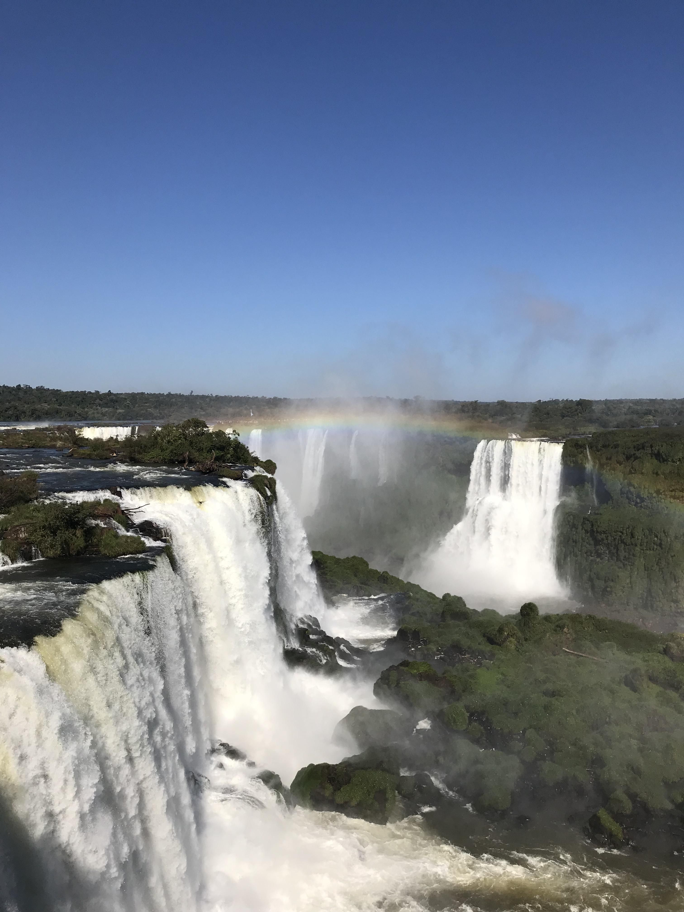
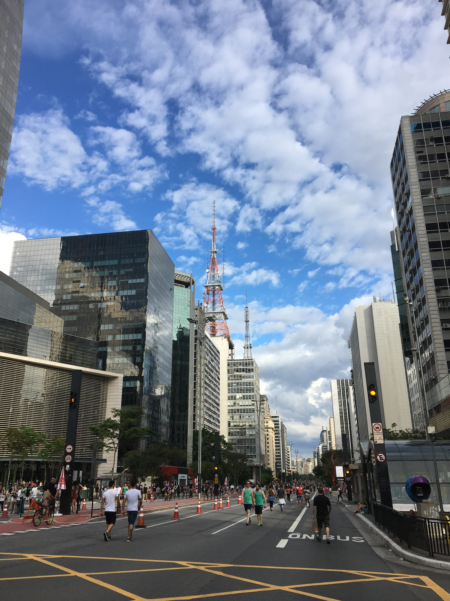
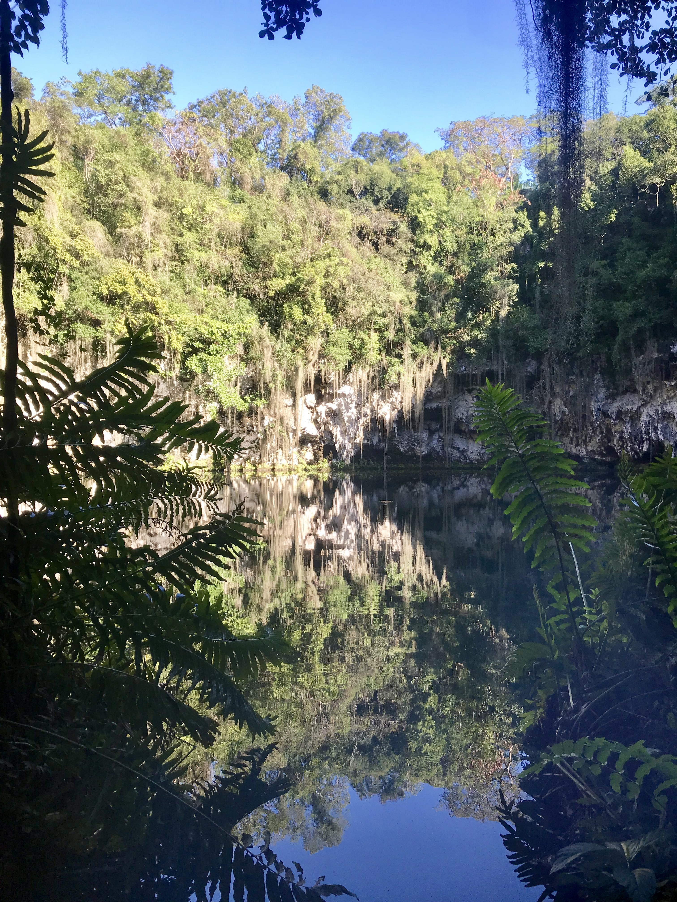
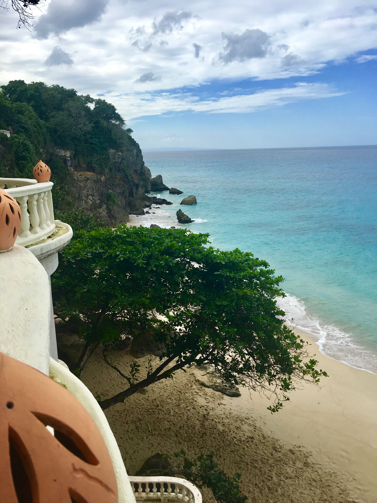
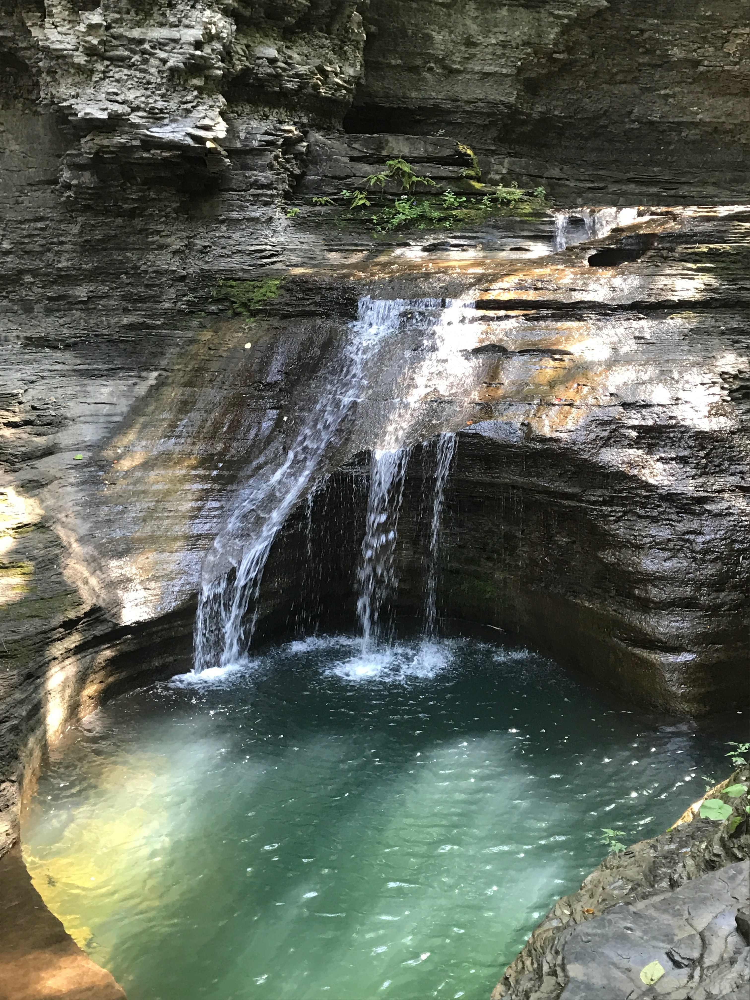
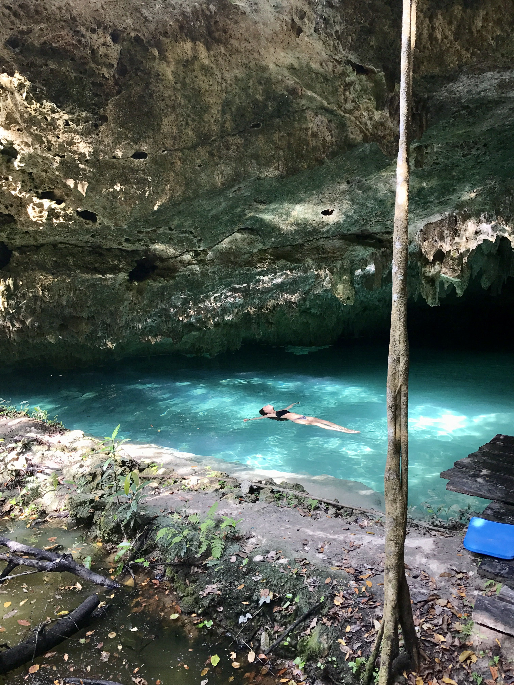
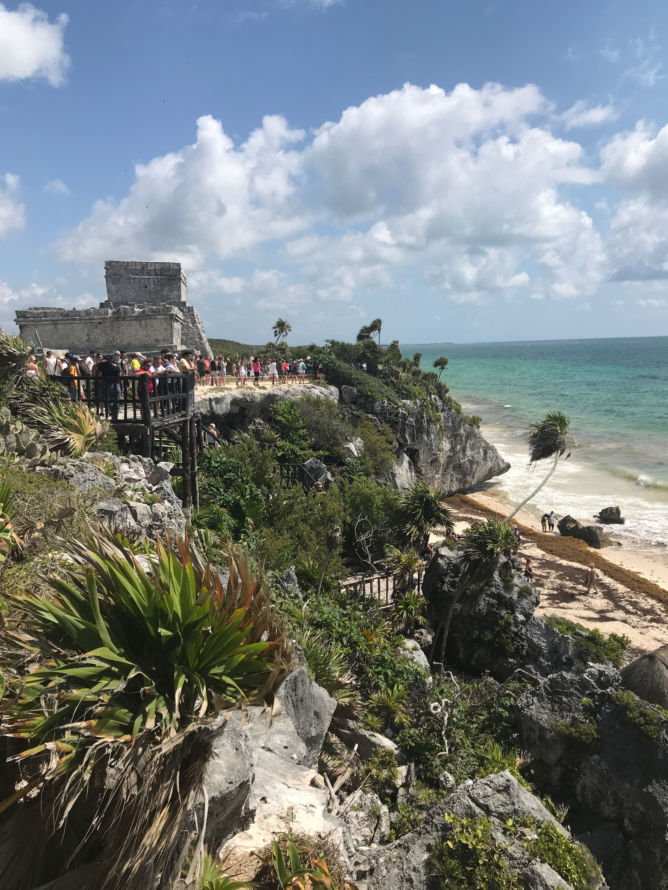
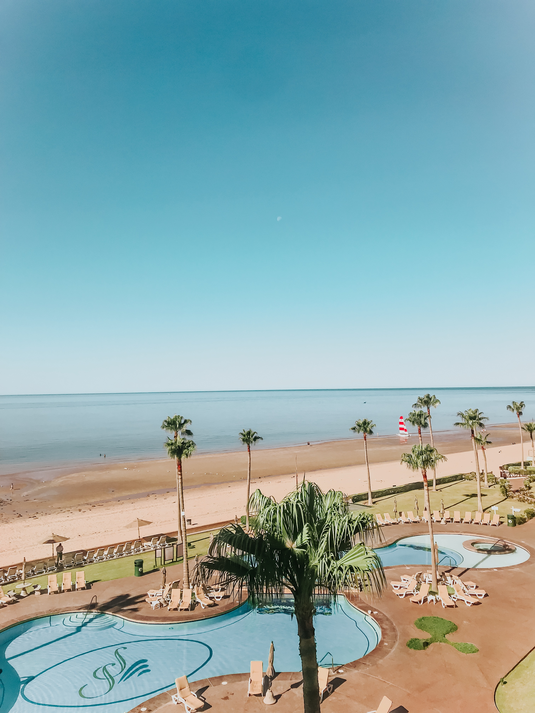

Welcome!
There are some moments in life where you realize how lucky you are for being alive, and having such great people around you. Well, that moment for me normally occur when I travel somewhere by myself. I believe that by travelling by yourself, you are able to experience the best companion that you could ever have: YOURSELF. I love my company and I love meeting new people and new places when I am alone, because then I can be 100% me, without worrying what other people might think.
A little bit more about my passion...
I believe that the main reason why I love travelling so much is because every time I visit a new place, I learn about a new culture, I meet new people and mainly, I expand my horizons and somehow I mature
Between all the palces I have visited, I believe that that visiting my own country will always be the best choice. I was born and raised in Brazil; a culture full of energy, color, and happiness. And that is exactly what every city in this country transmits: the food taste as good as it looks, the sunsets are as pretty as in the pictures, and the people are as lovely and passionate about the country as their reputation says so. There are really famous beaches in Brazil which I definitely recommend: Trancoso, Ilha de Fernando de Noronha, Itacare, and Jeriquoaquoara are some of them.
Another important fact about me is that I moved to Mexico City when I was 13 years-old, and since then I have been exploring the wonderful country of Mexico. It's been a great experience to travel to places like Cancun or Tulum. I also love Bacalao and Holbox, which are two places not really frequented by tourists, however, that also means they are way more preserved. The greatest tip I can give about travelling to Mexico, is: PLAN EVERYTHING AHEAD. Mexicans believes they can fool you easily, so it's better to have everything planned in advance so you won't pay more at the time you arrive.


My own experiences
Some of the places I have been are:
- Brazil
- Saint Marteen
- Aruba
- St. Kitts & Nevis
- Cayman Island
- Dominican Republic
And if I could give an advice to everyone that is planning a trip, with friends or family, is to research a lot about the place and the different non-turists spots that the country has to offer. Sometimes we limits ourselves by only visiting whatever places that are well known and famous, but the true beauty of the place is hidden somewhere only residents know about. Always ask for advice from them.
I believe that the greatest experiences comes from adventures, and by travelling somewhere knowing all the tourists and non-tourists spots to visits, you are able to filter the best options and enjoy your well planed days!
Brasil
TOP FOODS
- Feijoada
- Churrasco
- Churrasco
TOP PLACES TO VISIT
- Fernando de Noronha
- Rio de Janeiro
- Florianopolis
TOP BEACHES
- Trancoso
- Praia da Pipa
- Itacare
-

- 
- 
- 
- 
Dominican Republic
TOP FOODS
- Sancocho
- Tostones
- Mangu
TOP PLACES TO VISIT
- Punta Cana
- Santo Domingo
- Puerto Plata
TOP BEACHES
- Casa de Campo
- Bavaro Beach
- Bahia de las Aguilas
- 
- 
- 
-

Mexico
TOP FOODS
- Tacos
- Chilaquiles
- Mole
TOP PLACES TO VISIT
- Chichen Itza Piramid
- San Miguel de Allende Cathedral
- Bacalar, Quintana Roo
TOP BEACHES
- Tulum, Quintana Roo
- Los Cabos, Baja California
- Holbox, Quintana Roo
- 
- 
-

- 
Spain
TOP FOODS
- Paella de Mariscos
- Pulpo a la Gallega
- Tortillas de Patata
TOP PLACES TO VISIT
- Barcelona
- Madrid
- Sevilla
TOP BEACHES
- Platja de Barceloneta
- Ibiza
- Menorca
Greece
TOP FOODS
- Moussaka
- Courgette balls
- Kebab
TOP PLACES TO VISIT
- Athens
- Crete Region
- Meteora
TOP BEACHES
- Mykonos
- Santorini
- Ios